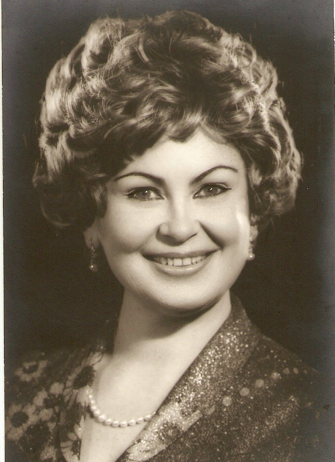

Începuturile vocației.

Una dintre marile personalități ale culturii românești din a doua jumătate a secolului al XX-lea — soprană a Operei Române din Cluj-Napoca timp de zeci de ani.
Născută în iunie 1926 într-o familie de preoți din Someșul Rece, lângă Cluj, Lucia Stănescu a fost ultima dintre cei șapte copii ai familiei. Botezată Felicia după dorința nașei și mătușii sale din București, va alege să poarte toată viața numele Lucia.
Și-a petrecut copilăria, adolescența și anii formării sub supravegherea atentă a mătușii Leontina, sora mamei. Începe școala primară în 1933, intră la liceu patru ani mai târziu și descoperă oamenii care îi vor sesiza, pentru prima dată, vocea aparte: mezzosoprana Aura Davidescu, profesoara sa de muzică, și baritonul Jean Atanasiu, fondator al Operei Naționale din București în 1922.
Adolescența îi este umbrită de atmosfera și restricțiile războiului 1939–1945, de moartea Aurei Davidescu în marele cutremur din noiembrie 1940 și de bombardamentele aviației americane din aprilie 1944, în urma cărora se refugiază pentru o vreme la Turda.
Revenită în București, este admisă în 1945 atât la Academia Regală de Muzică, cât și la Facultatea de Drept — la cea din urmă va renunța doi ani mai târziu, pentru a-și urma vocația.
O viață în scenă.
Academia Regală de Muzică
Admisă simultan la Academia Regală de Muzică și la Facultatea de Drept din București — la cea din urmă va renunța doi ani mai târziu pentru a-și urma vocația. Cântă timp de doi ani în Corul Radiodifuziunii Române.
Debut la Opera Română din Cluj
Angajată ca soprană la propunerea directorului Constantin Bugeanu. Începe cariera care o va consacra ca una dintre cele mai prețuite voci ale generației sale.
Director al Operei din Cluj
Conduce Opera Română din Cluj timp de cinci ani — o perioadă marcată de turnee internaționale care vor da instituției o vizibilitate europeană fără precedent.
Stabilirea în Italia
După numeroasele turnee la Teatrul Goldoni din Livorno, se îndrăgostește de Italia și se stabilește definitiv acolo, recăsătorindu-se cu un impresar italian.
„Eroină Pucciniană”
Fundația Festivalului Puccini din Italia îi conferă cea mai înaltă distincție pentru interpretele lui Puccini — recunoaștere a nenumăratelor sale interpretări din opera marelui compozitor.
Sfârșitul unei epoci
Se stinge la 95 de ani, lăsând în urmă mărturia unei voci care a străbătut continentele și a devenit, pentru generații, sinonimul însuși al operei românești.
Roluri memorabile.
De-a lungul unei cariere de peste trei decenii, a interpretat roluri memorabile mai ales din operele lui Verdi și Puccini. Pe scena Teatrului Goldoni din Livorno a interpretat constant rolul Aidei și majoritatea eroinelor pucciniene.
Distinsă cu titlul „Eroină Pucciniană”,
de către Fundația Festivalului Puccini din Italia.
Recunoaștere a profundei sale legături cu opera celui pe care l-a iubit poate cel mai mult — Giacomo Puccini. Confirmarea oficială a unei dedicații întregi: zeci de ani petrecuți în slujba marilor eroine pucciniene, de la Cio-Cio-San la Mimì, de la Manon la Tosca.